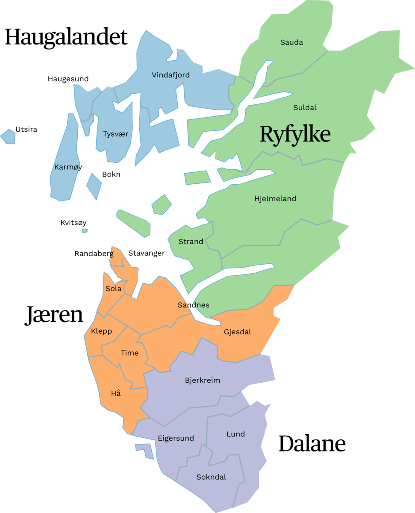

<! Del av Nettsiden>

<body style="background-color:Aquamarine;">
<title>Rogaland Fylket i Norge</title>
<h1 style="border:2px solid Green; background-color: black; color:white; text-align:center;">Rogaland</h1>

<h4> Rogaland sin hovedstat er Stavanger </h4>
<h5> Rogaland er en av Norges 2 fylker som produserer mye olje </h5>

<h5> Som du ser på Bildet er rogaland delt opp i 4 deler </h5>
<a href="MIN%20NEET.html"><strong>Hovedside</strong></a>
</body>
